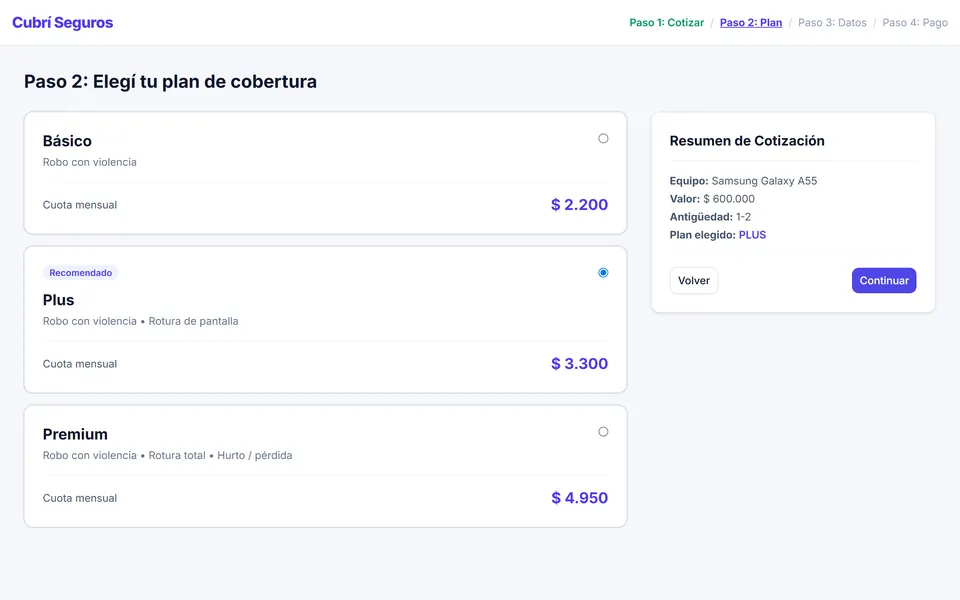
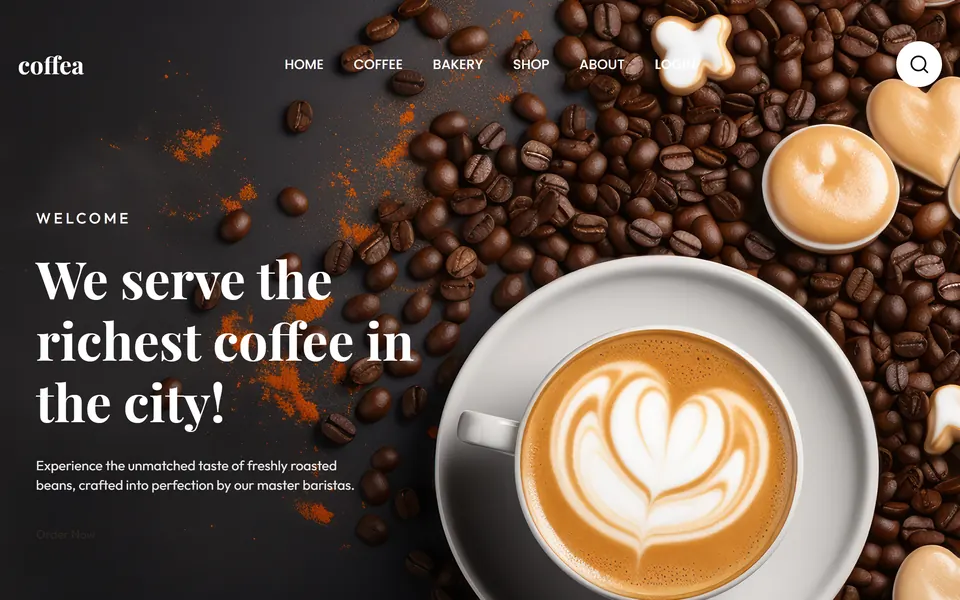

Maquetación
HTML semántico, encabezados en orden, formularios con validación y accesibilidad pensada desde el principio.
- HTML5
- WCAG 2.2
- Formularios
- SEO básico
Visto en Cubrí Seguros
Disponible para pasantía o trainee front-end
Estudiante de Sistemas · Front-end y UI
Maqueto interfaces con HTML semántico y CSS ordenado por capas, que se leen bien en cualquier pantalla y se pueden usar con el teclado.
Concepción del Uruguay, Entre Ríos · GMT−3 · Presencial o remoto
Cada skill dice en qué proyecto se puede ver. Así no hay que creerme: se puede comprobar.
HTML semántico, encabezados en orden, formularios con validación y accesibilidad pensada desde el principio.
Visto en Cubrí Seguros
Layouts con Grid y Flexbox, mobile-first, design tokens y CSS organizado por capas con nombres BEM.
Visto en Coffea
Módulos ES, estado centralizado, validaciones y flujos de varios pasos sin frameworks.
Visto en Cubrí Seguros
Diseño en Figma, versionado con Git y deploy automático. Programación en Python y Java en la carrera.
Visto en GitHub (se abre en otra pestaña)
Dos casos de estudio completos, con el problema, el proceso y lo que aprendí, y la serie de ejercicios donde practiqué cada técnica.

Cotizador para contratar el seguro de un celular en 4 pasos: equipo, plan, datos y pago simulado, con resumen siempre visible.
Resultado: las cuotas coinciden con los 3 casos de prueba de la cátedra, y el pago rechazado deja reintentar sin perder lo cargado.

Landing de una cafetería de especialidad, con carruseles, favoritos y menú resueltos solo con CSS.
Aprendizaje: separar el CSS en capas y 9 componentes BEM hizo que cada cambio tocara un solo archivo.
19 ejercicios, desde la estructura HTML y el modelo de caja hasta Grid, animaciones y una landing integradora.
Aprendizaje: menú hamburguesa y formulario de varios pasos sin JavaScript, con :target y :checked.
Todavía no trabajé en una empresa. Esto es lo que hice en la carrera, con lo que se puede ver en mis repositorios.
2026 · En curso
Facultad de Ciencia y Tecnología, UADER
Sep – Nov 2026
Cátedra de Diseño UX-UI, FCyT UADER
2026
FCyT UADER
Soy Jerónimo, estudio la Licenciatura en Sistemas de Información en la UADER. Me gusta la parte del desarrollo que se ve: que una interfaz se entienda rápido y que el código detrás esté igual de ordenado.
Cuando arranco un proyecto, primero defino los tokens y la estructura de archivos, después maqueto mobile-first y al final pruebo con teclado y en tres anchos. Busco un primer lugar donde aprender de un equipo que haga lo mismo, pero mejor.

Tokens, capas y nombres claros antes de la primera línea de estilo. Lo que está ordenado se puede cambiar sin miedo.
Si CSS lo resuelve, no agrego JavaScript. Menos código es menos para mantener y menos para cargar.
Contraste, foco visible y teclado en cada entrega. La accesibilidad no se agrega al final.
¿Buscás a alguien para tu equipo de front-end?
Respondo en el día. Escribime por mail o dejame un mensaje con el formulario.
jeronimoquiroga420@gmail.com